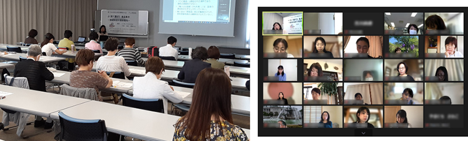

埼玉県補助事業 第58回埼玉県消費者大会プレ学習会を開催しました
5月23日（月）、埼玉会館会議室およびZoomによるオンラインで、「よく見て選ぼう食品表示 ～関連制度の最新動向～」と題して、（一社）Food Communication Compass 代表 森田満樹さんを講師に、学習会を開催し、16団体72人（会場：27人、Zoom：45人）が参加しました。

今年の第58回埼玉県消費者大会は、県内20の消費者団体が3月から実行委員会を開催し、10月25日の大会開催に向けて、社会状況や消費者課題について学びながら、話し合いをすすめています。
講師の森田満樹さんから、食品表示の法律、食品表示の項目、原料原産地表示、遺伝子組換え食品表示、食品添加物表示制度、健康食品と機能性表示食品、食品表示のこれからについて、食品表示の基本的なことから、実例を示しながら詳しく説明いただきました。
講演後の質疑応答では、会場からもオンラインでも質問が寄せられ、それぞれていねいにお答えいただきました。参加者からは、原料記載の「、」と「又は」の違い、「人工」や「化学」の表示が使われなくなったこと、ケチャップの着色料やマヨネーズの乳化剤など使ってはいけないものがあること、などお話を聞くまで気にも留めていなかったことに気づき、気にしているつもりでわかっていないことがたくさんあることに気づいたなどの声が寄せられました。